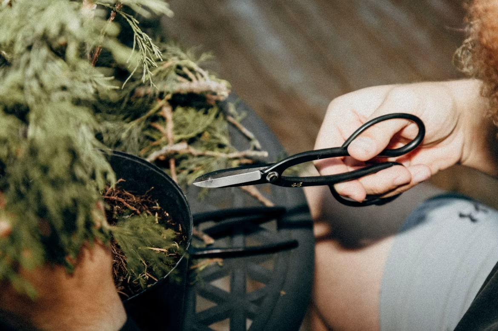

Bonsai Workshops & Classes
Participate in physical, hands-on masterclasses held inside our peaceful Ojai and Portland galleries. Each session introduces historical horticulture aesthetics, seasonal biological rhythms, and precision tools.
- Beginner Guides: 3hr starter session. All trees, tools, and soil included. $85/person
- Intermediate Styling: Refining styled deadwood pruning and seasonal wiring. $150/person
- Private Mastery: Customized seasonal progression with our head botanical curator. From $200